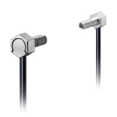
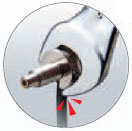
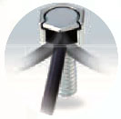
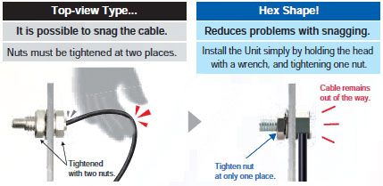
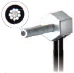
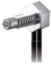
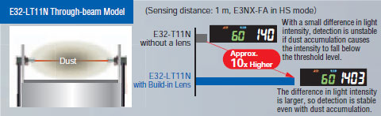
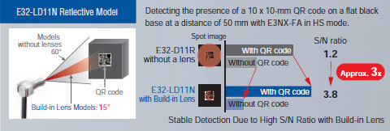
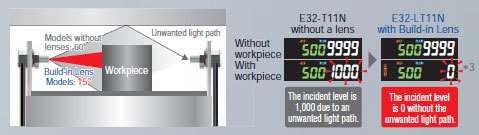
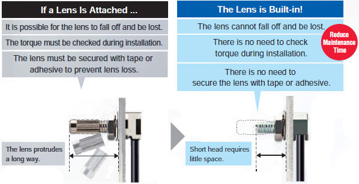

Hex-shaped models are now available with high-power built-in lenses for stable detection.
Achieve stable detection and easy onsite application.
Building Automation
Industrial Automation
Power Automation & Safety


Bangladesh Distributor
E32-LT11N / LD11N / LR11NP
Hex-shaped Fiber Unit

Fiber Units with Build-in Lenses provide more stable detection and simpler, more reliable installation.
about this Product Family
Related Contents
- Fiber Sensors
- Features
- Lineup
- Specifications
- Dimensions
- Application
- Catalog
last update: November 18, 2013
Fiber Units with Build-in Lenses provide more stable detection and simpler, more reliable installation.
Hex Shape
Tool-friendly Construction for Reliable Installation
Wrench Does Not Contact Cable
OMRON’s original tool-friendly construction allows the wrench to fit all the way onto the nut without coming into contact with the cable. The Fiber Unit is not accidentally damaged.

With conventional models, it was possible for the wrench to hit the cable and damage the optical fiber, preventing stable detection.
Easy Cable Routing
The cable opening is wide, so the cable can be routed easily.

Hex shape Provides Simplicity and Reliability

Full lineup of Hex-shaped Units! (Models without Lenses)
[M3] Coaxial Reflective Model E32-C21N
There are nine receiver fibers.*
Low-reflective objects or loose/inconsistently oriented objects can be detected more reliably.
* The conventional E32-C31N Fiber Unit has four receiver fibers.
A small spot lens can be attached.

[M4] Diffuse-reflective Model E32-D21N
Improved Lineup
General-purpose M4 Hex-Shaped Models.

Build-in Lens [PAT.P]
Stable Detection Due to High Power and Narrow Field of View
Long-term Stable Detection Even in Dusty Environments
The E32-LT11N’s incident light level is approx. 10 times higher than that of the conventional Fiber Units.*1 High power means stable detection even in dusty and dirty environments.
*1 OMRON Test Results.

Stable Detection of Target Area Changes
The E32-LD11N’s signal change (S/N ratio) is approx. 3 times higher than that of the conventional Fiber Units.*2 Because the target area is viewed with the narrow field of a 15° aperture angle, there is a greater difference in incident light levels and objects can be detected reliably.
*2 OMRON Test Results.

Reduce False Detection Caused by Scattered Light
False Detection is greatly reduced because the 15° aperture angle eliminates scattered light, even in tight spaces.
*3 The incident light levels are for illustration only.

Build-in Lens Provides Simplicity and Reliability

last update: November 18, 2013